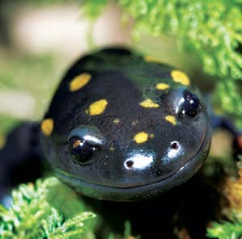
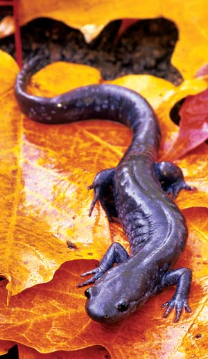
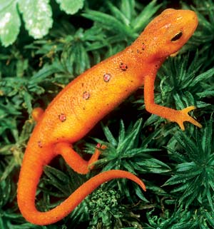
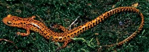
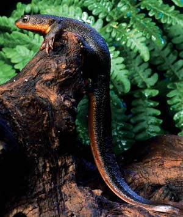
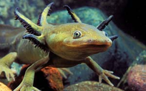
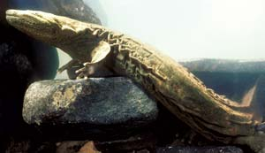
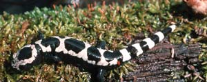
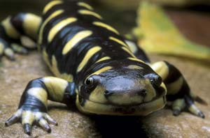

Dang, I muttered under my breath. I’d approached the promising pool with a determined angler’s stealth, stalking upstream in the rocky shallows, then wading into the higher waters that veered past my target - a smooth patch of liquid tucked deep and still beneath limbs overhanging the far bank. If ever there was a place for a smart mountain trout to wait for food, I thought as I cast my line, this is it.
But now I was knee-deep at the pool’s edge, bending to retrieve the weighted fly that, instead of reaching its destination, had wrapped its line around a branch, drifted beneath the surface and wedged between rocks. Reaching into the clear water for the errant fly, I noticed a snakelike twitch of movement near my hand - which I quickly pulled away. Peering closer, I could make out … no, not a snake, but a fat-bodied, paddle-tailed, wedge-headed something at least a foot and a half long, its eyes barely slits, its mottled, pebble-colored skin subtly rippling. What the ... ? In that instant I realized that my question had answered itself: I was looking at a hellbender, one of our continent’s largest salamanders.
If you wouldn’t ordinarily picture a creature the size of your forearm when you think of a salamander, you’re not alone. Then again, you might not think of a squirming, eel-like organism either; or a blind cave dweller; or a bumpy, finger-size critter that can be deadly poisonous.
All of these unique life-forms, and many more, are North American salamanders. At least 150 species of salamanders live north of Mexico, more than in any other region on the planet. And while most of us have seen salamanders, few are aware of their extraordinary diversity. They range in size from the diminutive 2-inch pygmy salamander, found in spruce-fir Appalachian forests, to the 2- to 4-foot-long two-toed amphiuma, a ditch-dwelling Southeastern species that resembles an eel. And if you think salamanders are mostly gray or brown, think again: among them are some of nature’s most colorful creatures.
Most of us are similarly unaware of salamanders’ importance to the ecosystems around us. In many areas they’re a critical food source for a wide range of reptiles, fish, birds and mammals. In some mature forests, especially old growth areas, salamanders are so abundant they’re the predominant and most numerous vertebrate. Because many salamanders spend part of their lives as waterborne larvae and then move onto land, they serve as a vital nutrient transport system from wetlands to surrounding terrain, converting the aquatic organisms they consume as larvae into protein - their own body tissue - and then dispersing that energy as prey for land-dwelling creatures higher on the food chain. At the same time, salamanders consume substantial quantities of worms, snails, insects and other forest-floor invertebrates, influencing those populations and resulting rates of organic-matter decomposition and nutrient cycling.
Salamanders are amphibians and belong to the order Urodela, also called Caudata by some authorities. Both words are references - the first Greek-based, the second Latin - to the presence of a tail, which is the common denominator among all salamander species in all their life stages. Although they’re sometimes called “spring lizards,” salamanders are not lizards at all - lizards are reptiles, which have dry, scaly skin and clawed toes. Salamanders have smooth, moist skin and clawless toes.
Worldwide, there are roughly 350 salamander species divided into either eight, nine or 10 families, depending on which scientists are doing the sorting. The uncertainty is understandable, given salamanders’ broad physical spectrum, as well as their widely varying habitats, behaviors and life cycles. Some live entirely on land; some are wholly aquatic; some divide their lives between land and water. Some salamanders hatch directly from eggs; others emerge first as larvae or another intermediate stage before metamorphosing into entirely different forms. Some never quite grow up and retain many larval features, such as external gills or slitted eyes.
You get the idea. Getting a grip on an all-inclusive definition of “salamander” is as slippery as the little (or big) rascals themselves. Here’s a look at a few of the more notable groups in North America.
Some salamanders breathe by rhythmically gulping and squeezing air into internal lungs, much as frogs and toads do. Lungless salamanders, though, breathe through a system of minute capillary vessels in their skin and the lining of their mouths. More than half of the world’s salamanders, and almost two-thirds of North America’s, belong to this family.
The largest group of lungless species, the woodland salamanders, defy amphibian stereotypes. Like all salamanders, their existence is tied to water. But woodland salamanders are entirely terrestrial, their bodies kept necessarily moist by the damp, shaded forest environments in which they live. Unlike frogs, toads and other salamanders, they forgo a waterborne infancy as legless larvae. Instead, woodland salamanders are born on land as tiny versions of their grown-up selves.
Take, for instance, the 2- to 3-inch red-backed salamander, a common woodland species. After mating, the female lays a cluster of up to 24 eggs, then curls her body around them to keep them moist and guard them from predators. Over the course of roughly two months, the young undergo the entire process of larval development inside the egg. After they emerge, the babies stay near their mother for several weeks, until they’re ready to venture out on their own.
Red-backed salamanders are abundant throughout the Northeast, the Appalachians and much of the Midwest, and have a close western cousin in the Pacific Northwest. Other woodland types, such as the slimy salamander, also occur over a wide range. But many species are limited to extremely small areas, the products of eons of isolation and evolution within a particular location’s terrain, microclimate, geology and vegetation. For example, the Jemez Mountains salamander lives only in north-central New Mexico’s Jemez Mountains at elevations between 7,185 and 9,186 feet.
While woodland salamanders are landlubbers, other lungless species carry on more typically aquatic life cycles, in which the females deposit eggs in or near water and the young pass through a water-bound larval stage before metamorphosing into adults that stay in or around liquid habitat. Among them are most of the dusky salamanders, which reside in and along springs, seeps or streams, hiding beneath stones by day and hunting by night for aquatic insect larvae. If you live in the eastern half of the country and have gone rock-tipping along a brook, chances are at least some of the salamanders you found were members of the dusky clan. (You were, of course, careful to gently tip the rocks back just as you found them, right?) You might also have discovered a startling trait among some duskies: they can leap several times their body length to escape. If you encountered a long, slim, yellow or yellow-striped creature that dashed rather than jumped away, you may have found one of the brook salamanders such as the northern two-lined salamander, common in the Northeast, or the long-tailed salamander, which ranges from southern New York to Louisiana and west to Kansas and Oklahoma.
Most of the time, mole salamanders live in tunnels inside rotting logs or underground in burrows, foraging for worms and insect larvae. But once each year, impelled by a confluence of warm rain and an urge to reproduce, they emerge from their subterranean homes and lumber across the land in mass migrations toward breeding pools. Numbering some 14 species, mole salamanders are found only in North America. Among them are the strikingly patterned marbled, spotted and tiger salamanders. The latter, at up to 13 inches long, is our continent’s largest land-dwelling salamander and also the most widely distributed. Though absent in the Northeast and most of the Appalachians, tiger salamanders are found throughout the rest of the eastern two-thirds of the country and southern Canada, and in isolated populations in the western states.
Marbled salamanders migrate in autumn, but most other mole salamander species make their annual trek on one or more rainy nights in spring or early summer. They travel in large numbers, herdlike, clambering over obstacles, as if drawn by some invisible beacon. Their destinations are vernal pools, woodland depressions that fill with water only part of the year. The temporary pools offer a safe harbor for breeding, free of fish that would feed on eggs and larvae.
Spotted salamanders emerge in February and March throughout much of the eastern half of the United States. Males and females gather in pools by the dozens. The next day, the pools hold fist-size clusters of fertilized eggs attached to plant stems. Over the coming weeks an ancient life cycle will repeat: the larvae will hatch, grow, lose their external gills, develop legs and lungs, and move onto land as adults.
Because their migrations can take them across highways, mole salamanders sometimes need a helping hand. In some communities on rainy spring nights, volunteer “crossing guards” take up positions at highways along known migration paths, stopping cars when necessary and hand-carrying the salamanders to the other side. Other communities have built salamander tunnels beneath roads.
The only obvious physical difference between newts and other salamanders is the newts’ rough, less-slimy skin. Most of the world’s 60 newt species - all members of the family Salamandridae - live in Europe and Asia. North America’s six species are equally split among Pacific newts and Eastern newts.
Pacific newts range along the coast from Alaska to Southern California and are generally terrestrial. Eastern newts, which live throughout the eastern United States, are mostly aquatic - except for a midlife land stage among some. The eastern (or red-spotted) newt hatches as a gilled larva, but after several months gains legs and lungs, changes its drab color to bright red, and climbs onto terra firma, where it’s called a “red eft.” After two to seven years of living on land, the animal transforms again, turning olive green with red spots and developing a larger tail. It then returns to its natal waters for good, as an aquatic adult.
Nearly all salamanders produce bad-tasting or irritating secretions to discourage predators, but newts can be especially toxic. We know at least one species, the rough-skinned newt, can be fatal to humans: a person died after swallowing the creature on a dare.
“Surely one of the world’s ugliest” creatures, declared a naturalist upon viewing the mother of all hellbenders, a record 29½-incher captured in the 1940s from North Carolina’s Little Pigeon River. The average hellbender’s size is less, about 11 to 20 inches - but this hardly diminishes the startled reactions of anglers who land a “trout,” only to discover a squirming, tail-whipping refugee from The Lost World.
That the hellbender resembles an enormous flattened tadpole with a bad case of bathtub wrinkles is no accident. As it grows from infancy the hellbender only partially changes form, sprouting legs and losing its external gills but never quite outgrowing its youthful larval physique, and never leaving its watery environment. Smaller but even less transformed are the primeval-looking waterdogs and the mudpuppy, all of which keep their fanlike external gills. So too do the eel-like sirens, which grow up to 30 inches long and crawl about in muddy ditches and other shallow-water habitat. Hellbenders live in fast-moving, highly oxygenated streams and rivers - the same habitat as trout - from New York and Pennsylvania south to northern Georgia and west to Missouri and Arkansas.
Another group termed “giant” salamanders, the genus Dicamptodon, is made up of four species variously found in Northern California, northern Idaho and along the Pacific Northwest coast. They’re not particularly giant-size - the largest, the California giant salamander, is about 7 inches long. But they’re imposing enough: sturdy-legged with hefty tails, large heads and teeth that can inflict a nasty bite.
We’ve barely scratched the surface of our continent’s astonishing variety of salamanders. Because most are nocturnal, and nearly all are furtive and adept hiders, we live largely unaware and unappreciative of their presence, beauty, interesting habits and importance to our communities’ ecosystems. Unfortunately, in many areas salamanders - and amphibians as a whole - are declining because of the effects of ill-considered human activities: siltation and pollution of waterways, loss of wetlands, and fragmentation of fields, forests and other vital habitats.
The good news: In most regions, now is a great time to develop your own appreciation and understanding of these unique animals. From coast to coast, the season’s lengthening days and warming rains are awakening salamanders to begin their life cycles anew. Whether it’s a dark and stormy night, or simply a pleasant day in the woods - they’re out there for the finding and observing. Grab a field guide (and perhaps a raincoat) and see for yourself: Our wealth of salamanders is worth treasuring, worth protecting.
In many areas, this is a great time of year to get out there and see salamanders firsthand. They are some of the most amazing, colorful and diverse creatures in North America.
|
 DWIGHT KUHN Spotted salamander |
 MASLOWSKI PRODUCTIONS Jefferson salamander |
 DWIGHT KUHN Red-spotted newt, eft stage |
|
 BILL BEATTY Long-tailed salamander |
 MICHAEL DURHAM Rough-skinned newt |
 KICHIN & HURST/LESSONPHOTO Tiger salamander, larval stage |
|
 JOE MCDONALD/ANIMALS ANIMALS Hellbender |
 TODD FINK/DAYBREAK IMAGERY Marbled salamander |
 DAVID M. DENNIS/ANIMALS ANIMALS Barred tiger salamander |